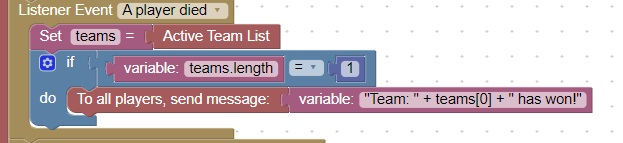

<h1>End of Game Detection</h1>
When a player dies, end of game detection can be run<br>
You can check how many teams are still active.<br>
If only 1 team remains, the game is over<br>
<br>
<hr>
<center></center>